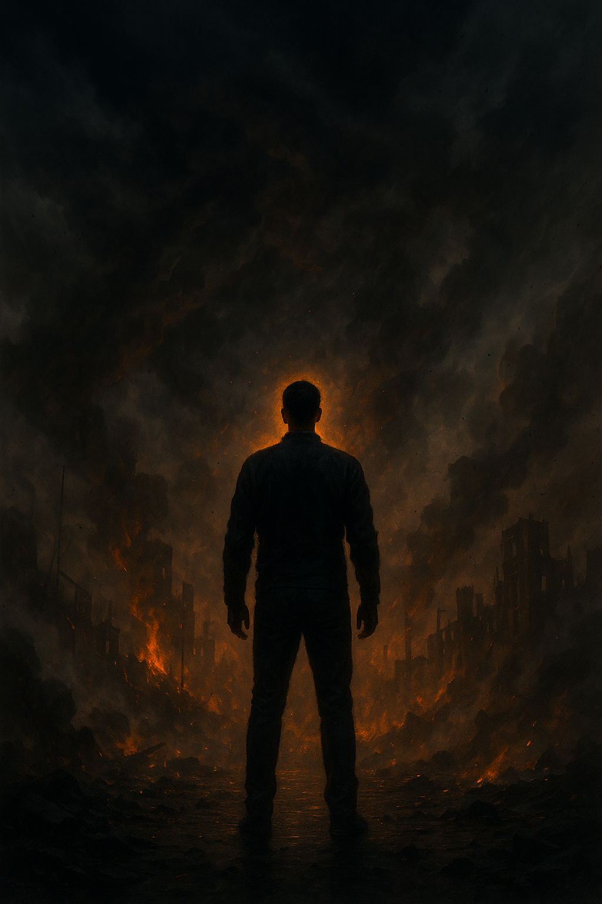

Sebekontrola emocí
Klid uprostřed chaosu

Viděl jsi někdy chlapa, jak se kompletně sesype kvůli jedné větě? Jak se nechá vytočit do běla, hádá se před lidma, bouchá pěstí do stolu a pak tam stojí jako kluk, co neudržel nervy? Tohle není síla. Tohle je slabost v přímém přenosu. Skutečná síla chlapa není o tom, že má svaly a umí řvát. Je o tom, že zvládne udržet klid, když svět hoří. Když tě někdo provokuje. Když máš chuť utéct. Když tě sžírá strach nebo žene ego. Tady se ukáže, jestli jsi muž, nebo jen chlapec v těle dospělého.
Proč dnes chlapi neudrží nervy
Komfort. Instantní svět. Všechno hned. Jakmile něco drhne, mozek chce rychlou úlevu. Sociální sítě tě učí reagovat okamžitě – like, koment, hejt. Žádný odstup, žádný klid. Jen spoušť emocí. A výsledkem je generace chlapů, co se sesypou kvůli hloupé poznámce. Sebekontrola je dnes vzácná – a proto tak silná. V davu hysteriků je chlap, co mlčí a stojí pevně, magnet. Cítíš z něj klid. A klid je dnes luxusní zboží.
Vztek – nejtvrdší test chlapa
Vztek tě dokáže nakopnout, ale taky zničit. Není problém se nasrat. Problém je udržet se. Jeden výbuch a můžeš přijít o vztah, práci, respekt. Pár minut vzteku může zničit roky budování. Proto je vztek test: buď ho zkrotíš, nebo on zkrotí tebe.
Partnerka si do tebe rýpne. Vypálíš hlášku, co řeže. Ticho, slzy, děti v koutě. Večer prázdno a vina. Jedna věta. Jeden zkrat. O cihlu míň v základech vašeho domu.
V práciŠéf tě sjede před kolegy. Ruka ti cuká, chceš bouchnout do stolu. Když to uděláš, skončil jsi – ne nutně v práci, ale v očích lidí. Vypadáš jako kluk, ne profesionál.
Jak reaguje chlap s kontrolou- Vědomý dech: 4 vteřiny nádech, 6 vteřin výdech. Dvakrát. Hlava se vrací do klidu.
- Odklad: neodpovídáš v první minutě, impulzivně: „Vrátím se k tomu za chvíli.“
- Tón: krátce, věcně, bez sarkasmu. Každé slovo se počítá.
Strach – nepřítel i učitel
Strach varuje, ale v bezpečném světě z něj často bývá brzda. Bojíš se říct nápad, přihlásit se, podívat se pravdě do očí. A tak stojíš. Rok. Pět let. Strach tě nespálí; udělá z tebe průměr.
Parta týpků. Srdce buší. Přecházíš na druhou stranu. V tu chvíli sis potvrdil: jsem slabší. Ne kvůli nim, ale kvůli sobě. Příště přejdeš rovně. Zvedneš bradu. Oči klid.
PráceMáš myšlenku, ale bojíš se trapasu. Mlčíš. Za týden to řekne někdo jiný a sklidí potlesk. Strach ti vzal kredit.
Jak reaguje chlap s kontrolou- Přizná si strach: „Bojím se – a stejně to udělám.“
- Mikrodávky odvahy: krok vpřed, ne skok přes propast. Každý den trochu.
- Realita vs. ego: „Co je nejhorší reálný scénář?“ Většinou jen trapas.
Ego – tichý zabiják
Ego je zrádné, protože se převléká za „ctnost“. „Musím mít poslední slovo.“ „Nenechám si srát na hlavu.“ Výsledek? Hádky o hovadiny, spálené mosty, role klauna. Silný chlap neřve, když má pravdu. Je klidný, protože pravdu má.
- Reaguješ na každou provokaci, i když je to ztráta času.
- Potřebuješ být vidět – i za cenu trapnosti.
- Bereš osobně věci, co s tebou nesouvisí.
- Umíš mlčet. Ticho je zbraň, ne slabost.
- Necháš hloupé řeči vyšumět. Nejsi popelnice na cizí bordel.
- Respekt držíš klidem a stálostí, ne hysterií.
Techniky, co fungují v reálu
- Dech 4–6: 4s nádech, 6s výdech, 6–10 cyklů. Aktivuje parasympatikus, srazí tlak.
- Odklad: rozhodnutí nikdy nepadá v první minutě vzteku. Dej si 10 minut.
- Papír místo výbuchu: tři věty – co se stalo, jak to vidím, co udělám.
- Fyzický výboj: 10–30 kliků, svižná chůze, krátký sprint. Energie ven, hlava v klidu.
- Stoický odstup: „Bude tohle důležité za rok?“ Většina věcí jsou malichernosti.
- Tři věty klidu: „Vidím tě. Rozumím. Pojďme věcně.“ Deeskalace bez servítků.
Model pro konflikty: 3 otázky
- Co je fakt a co domněnka? Odseparuj emoce od reality.
- Jaký výsledek chci za 24 hodin? Vedení k cíli, ne k úlevě.
- Jak to řeknu jednou větou? Zkrátí hádku na minuty.
14denní dril na emoční klid
Den 1–3: Dech 4–6 při každém podráždění. Neodpovídej první minutu.
Den 4–7: Každý den vstup do situace s mírným strachem (projev, hovor, oslovení). Krátký záznam.
Den 8–10: Jeden celý den bez sociálních sítí. Ego se bude kroutit – nedáš mu to.
Den 11–14: Každý konflikt řeš jednou větou. Mlč, když to bobtná. Vydrž tlak.
Tréninkové situace do týdne
První hodina bez mobilu – učíš mozek čekat. Ledová voda na obličej – kotva do přítomnosti.
DopravaNěkdo troubí? Dvakrát se nadechni, nezrychluj. Sprinty ega nevyhrávají závody života.
PráceOpožděný mail? Odpověz po krátké pauze, věcně a krátce.
Večer5 vět do deníku: co mě zvedlo, jak jsem reagoval, co příště. Krátce, poctivě.
Reparace po selhání (když to posereš)
- Přiznej vinu stručně: „Přehnal jsem to. Mrzí mě to.“ Bez „ale“.
- Náhrada škody: konkrétně, rychle, bez divadla.
- Pravidlo příště: jedna věta, jak to uděláš a vyřešíš jinak.
Upřímná, stručná reparace dělá víc než hodiny omluv. Síla je v převzetí zodpovědnosti.
Checklist chlapa (vytiskni)
- Nemluv v prvních 10 sekundách vzteku.
- Strach? Krok vpřed, ne ústup.
- Provokace? Mlč nebo odejdi.
- Telefon pryč, když řešíš konflikt.
- Jedna věta k cíli – ne tři odstavce emocí.
- Dech 4–6 kdykoli vře krev.
- Večer 5 vět: co vyšlo/nevyšlo/proč.
Závěr
Svět tě bude testovat. Lidi tě budou zkoušet – často i nechtěně. Tvým úkolem není vyhrávat hádky. Tvým úkolem je zůstat klidný. Když ovládneš sebe, ovládneš situaci. A když ovládneš situaci, získáš respekt, který nejde koupit ani ukřičet. To je cesta chlapa Mimo Trasu: klid v bouři, pevný krok, čistá hlava.